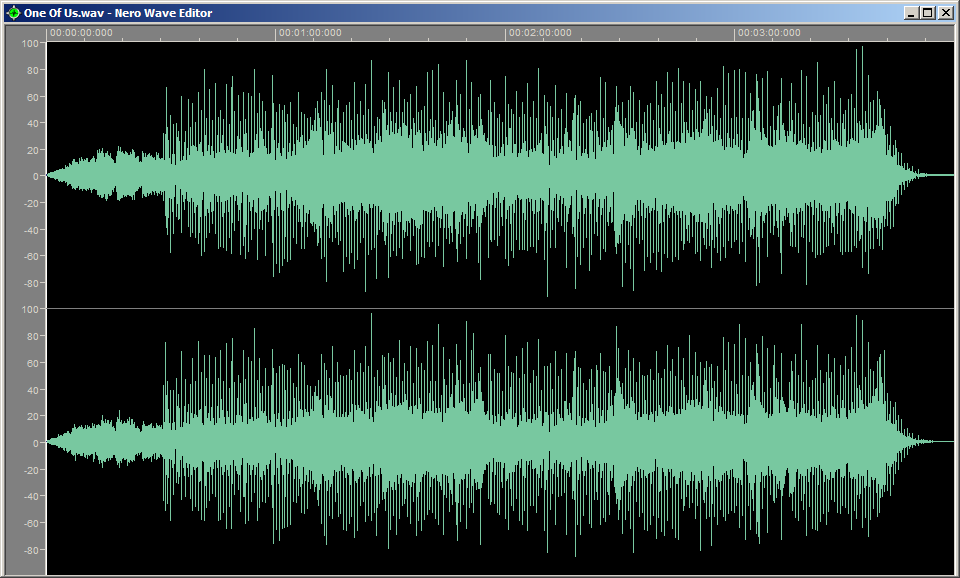

Аудиоредактор
Аудиоредактор, или волновой редактор — программа для редактирования звуковой информации в цифровом представлении (цифровой звукозаписи). Аудиоредактор является основным программным компонентом цифровой звуковой рабочей станции.
Функции аудиоредактора
Функции аудиоредакторов могут отличаться в зависимости от их предназначения. Самые простые из них, зачастую свободно распространяемые, имеют ограниченные возможности по редактированию звука и минимальное количество поддерживаемых аудиоформатов. Профессиональные пакеты могут включать многодорожечную запись, поддержку профессиональных звуковых плат, синхронизацию с видео, расширенный набор кодеков, огромное количество эффектов как внутренних, так и подключаемых — плагинов.
Отображение звукового сигнала
Звуковые данные графически представляются в виде последовательности отсчетов, которые объединены одной огибающей, соответствующей амплитуде звукового сигнала, называемой сигналограммой (или волновой формой). Окно программы с графическим изображением такой сигналограммы называется треком или звуковой дорожкой. Обычно редакторы позволяют изменять масштаб отображения дорожки, с возможностью менять как временное разрешение (горизонтальная ось), так и разрешение амплитуды звука (вертикальная ось). Наиболее продвинутые редакторы позволяют просматривать и изменять данные с точностью до одного отсчета. Также возможно представление звуковой дорожки в виде спектрограммы. В таком случае по вертикальной оси откладывается частота сигнала в Герцах, а интенсивностью или цветом отображается амплитуда сигнала. Подобное представление сигнала удобно для определения провала в частотном диапазоне, например для выявления последствий сжатия файла.
Запись и воспроизведение
Первые аудиоредакторы поддерживали запись, редактирование и воспроизведение только одной стереодорожки, то есть содержали две монодорожки с сигналами левого и правого каналов фонограммы. Но развитие мощностей ПК позволило производить одновременную запись сразу с нескольких входов многоканальной звуковой платы. Такие редакторы называются многодорожечными. При последующем воспроизведении в таком редакторе возможно производить сведение нескольких звуковых дорожек в одну моно или стереодорожку, или создавать многоканальную фонограмму, например, с целью подготовки сопровождения к кинофильму с объёмным звуком. Также одной из функций может быть подготовка и запись CD, DVD-Audio.
В основном в аудиоредакторе запись ведется без сжатия аудиоданных, для сохранения максимального качества звука. Однако, существуют программы, позволяющие производить запись со сжатием «на лету», для экономии места носителя или устранения лишних операций.
Помимо возможности записи с внешних источников, как правило, в аудиоредакторе имеется встроенный генератор простейших тонов, различных видов шума (например, белого и других цветовых шумов) и тишины.
Программы — аудиоредакторы
В настоящее время существует огромное количество компьютерных программ-аудиоредакторов для большинства популярных операционных систем. Часть редакторов звука универсальны, другие обладают ограниченной функциональностью и предназначены для решения только узкоспециализированных задач.
Некоторые мультимедийные программы, сочетают в себе функции редактора звука, редактора видеоряда и/или записи результата на CD диск (CD-RW) или DVD диск и т. п.
Среди аудио-редакторов встречаются как проприетарные программы, так и свободные, а также программы с открытым исходным кодом. Первые в большинстве своём требуют для использования приобретения платной лицензии (особенно профессиональные решения), другие распространяются бесплатно и без каких-либо ограничений. Примеры аудиоредакторов представлены ниже.
- Adobe Audition (CoolEdit)
- — полупрофессиональная, платная, проприетарная. Только для Windows.
- Ardour
- — цифровая звуковая станция, свободная (бесплатная), с открытым исходным кодом. ОС: Linux, FreeBSD, Mac OS X.
- Audacity
- — полупрофессиональная, свободная (бесплатная), с открытым исходным кодом. Кроссплатформенная.
- Sound Forge
- — профессиональная, платная, проприетарная. Только для Windows.
- WaveLab
- — профессиональная, платная, проприетарная. Windows, Mac OS X.
| Название | Создатель |
 Linux Linux
|
Mac OS X | Unix | Windows | Бесплатное ПО | Примечание |
|---|---|---|---|---|---|---|---|
| Ardour | Paul Davis | Да | Да | Да | Нет | Да | DAW |
| Ecasound | Kai Vehmanen | Да | Да | Да | Нет | Да | |
| Logic Pro | Apple | Нет | Да | Нет | Нет | Нет | |
| Samplitude | MAGIX | Нет | Да | Нет | Нет | Нет | |
| Traverso | Remon Sijrier | Да | Да | Нет | Да | Да | |
| mp3TrueEdit | - | Нет | Да | Нет | Да | Нет | Редактор MP3 без потерь |
| Audition | Adobe Systems | Нет | Да | Нет | Да | Нет | Ранее известна как CoolEdit |
| Sound Forge | Sony | Нет | Нет | Нет | Да | Нет | Ранее принадлежавшая Sonic Foundry |